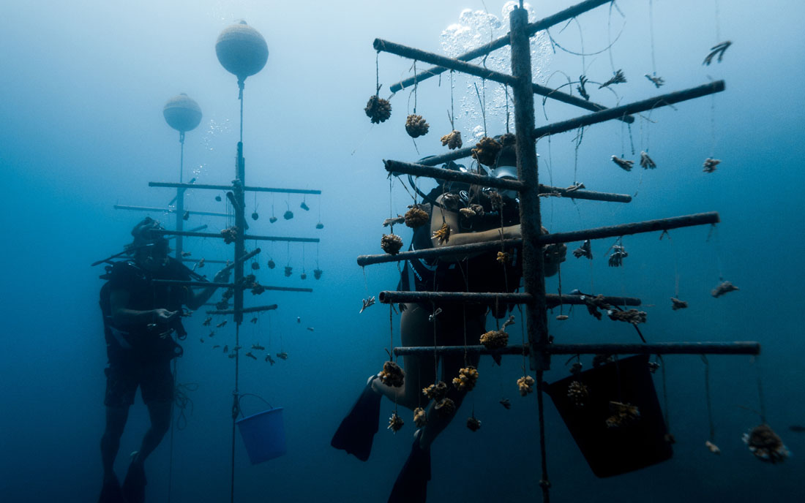
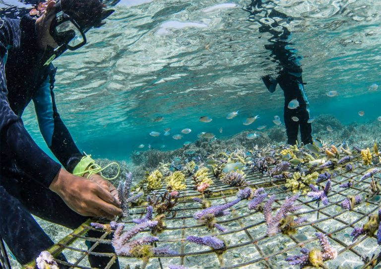
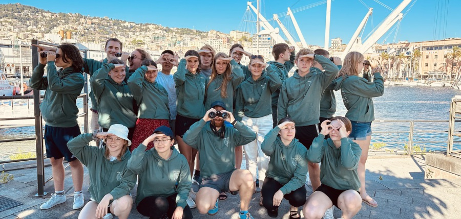
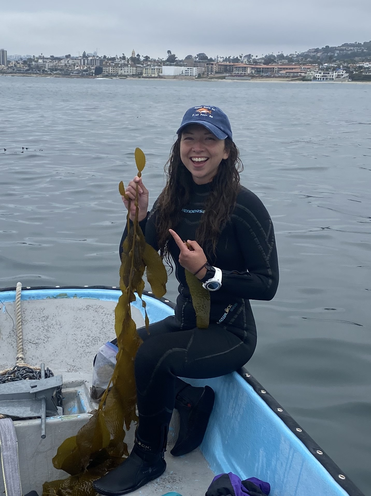
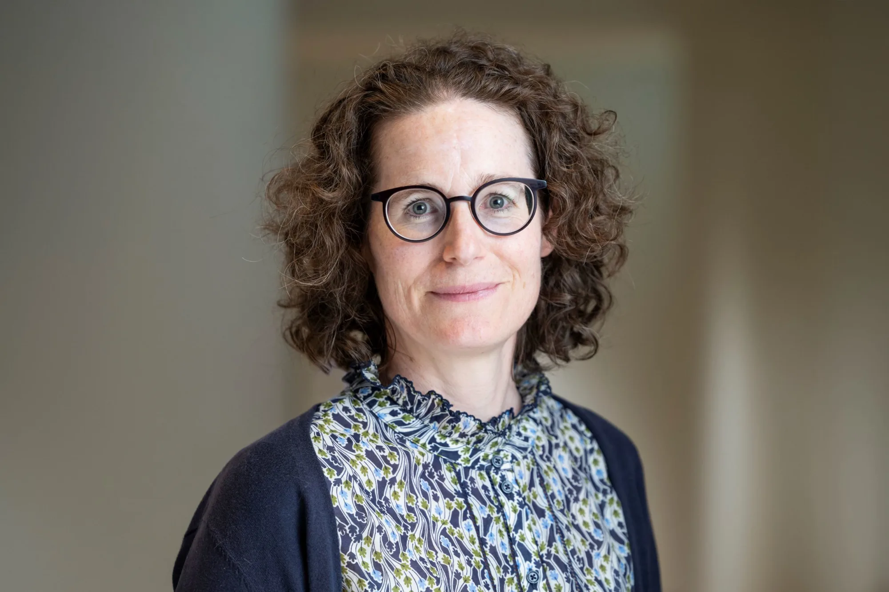
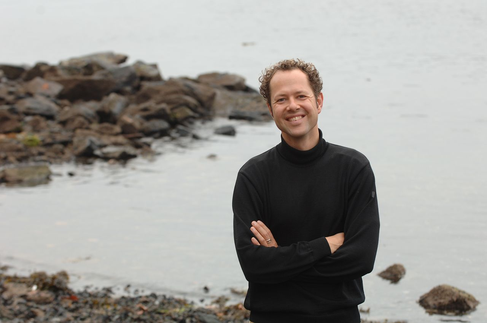
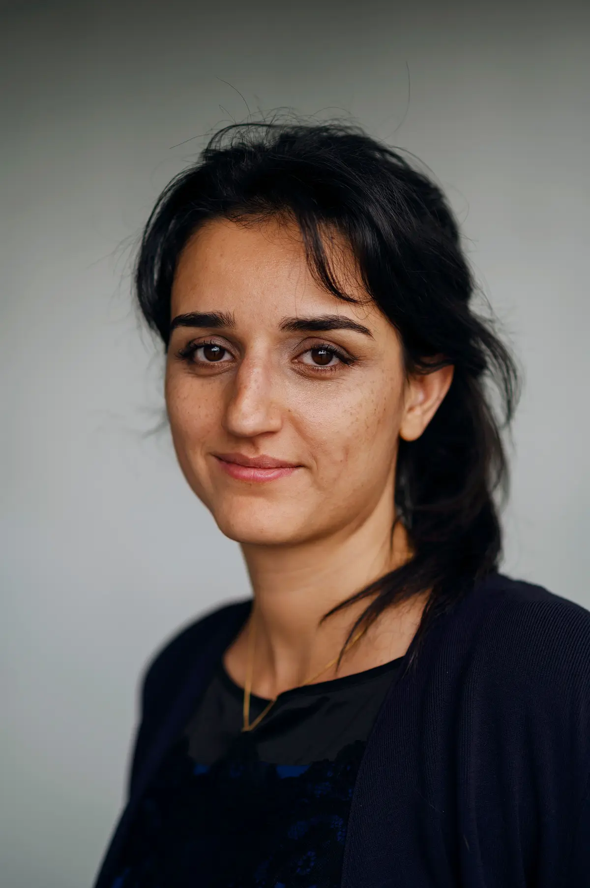

ReCoral wurde von jungen Menschen gegründet, die sich aktiv für den Schutz der Meere einsetzen wollten. Ausgangspunkt war die Beobachtung, dass viele Korallenriffe weltweit durch steigende Meerestemperaturen, Umweltverschmutzung und menschliche Eingriffe geschädigt werden.
Was mit einer kleinen Idee begann, entwickelte sich Schritt für Schritt zu einer Umweltorganisation mit dem Ziel, beschädigte Korallenriffe zu schützen, wiederherzustellen und die Öffentlichkeit über ihre Bedeutung aufzuklären.
Heute verbindet ReCoral praktischen Meeresschutz, Bildungsarbeit und Zusammenarbeit mit Partnerorganisationen. Unser Ziel ist es, Korallenriffe langfristig zu erhalten und aktiv zur Verbesserung der Ozeangesundheit beizutragen.



In den letzten Jahren hat sich ReCoral von einer kleinen Projektidee zu einer engagierten Organisation entwickelt. Anfangs lag unser Fokus vor allem auf Informationsarbeit und Sensibilisierung. Mit der Zeit kamen konkrete Schutzprojekte, Partnerschaften und freiwillige Einsätze hinzu.
Heute setzen wir uns für Wiederherstellungsmassnahmen, Bildung, Zusammenarbeit mit Meeresschutz-Stiftungen und die Förderung nachhaltiger Lösungen ein. Unsere Entwicklung zeigt, dass auch kleine Initiativen grosse Wirkung entfalten können, wenn Menschen gemeinsam handeln.
Mehr über unsere Zusammenarbeit erfährst du hier:
Zur Partnergesellschaft
Projektleitung

Kommunikation

Forschung & Daten

Öffentlichkeitsarbeit